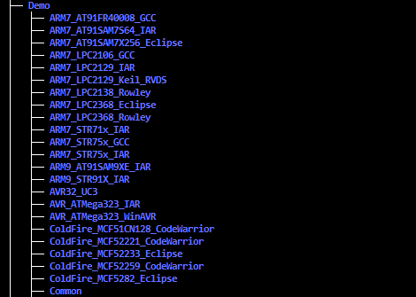
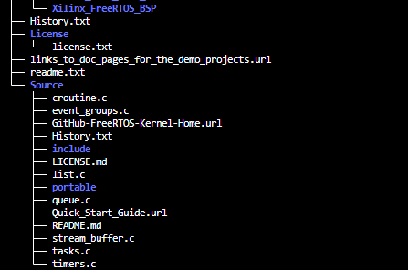

10.1.1. FreeRTOS概述
10.1.1.1. FreeRTOS目录结构


Demo: 工程文件，以”芯片和编译器”组成一个名字
Source
根目录下是核心文件，这些文件是通用的
portable: 目录下是移植时需要实现的文件
10.1.1.2. 核心文件
FreeRTOS最核心的文件有两个
FreeRTOS/Source/tasks.c
FreeRTOS/Source/list.c
Source目录文件 |
作用 |
tasks.c |
必需，任务操作 |
list.c |
必需，列表 |
queue.c |
基本必需，提供队列操作，信号量操作 |
timer.c |
可选，software timer |
event_groups.c |
可选，提供event group功能 |
croutine.c |
可选，已过时 |
10.1.1.3. 移植时涉及的文件
移植FreeRTOS时涉及的文件放在 FreeRTOS/Source/portable/[compiler]/[architecture] 目录下
需要关注 port.c portmacro,h
10.1.1.4. 头文件
FreeRTOS本身的头文件: FreeRTOS/Source/include
移植时用到的头文件: FreeRTOS/Source/portable/[compiler]/[architecture]
含有配置文件FreeRTOSConfig.h目录
头文件 |
作用 |
FreeRTOSConfig.h |
FreeRTOS配置文件，比如选择调度算法 |
FreeRTOS.h |
使用FreeRTOS API函数时，必须包含此文件，然后再去包含其他头文件,如task.h queue.h |
10.1.1.5. 内存管理
文件在 FreeRTOS/Source/portable/MemMang ，它也是放在 portable 目录下，表示你可以提供自己的函数.源码中默认提供了
5个文件，对应内存管理的5种方法
文件 |
优点 |
缺点 |
heap_1.c |
分配简单，时间确定 |
只分配，不回收 |
heap_2.c |
动态分配，最佳匹配 |
碎片，时间不确定 |
heap_3.c |
调用标准库函数 |
速度慢，时间不定 |
heap_4.c |
相邻空闲内存可合并 |
可解决碎片问题，时间不定 |
heap_5.c |
在heap_4基础上支持分割的内存块 |
可解决碎片问题，时间不定 |
10.1.1.6. Demo
Demo目录下是预先配置好的，没有编译错误的工程，目的是让你可以基于它进行修改，以适配你的单板